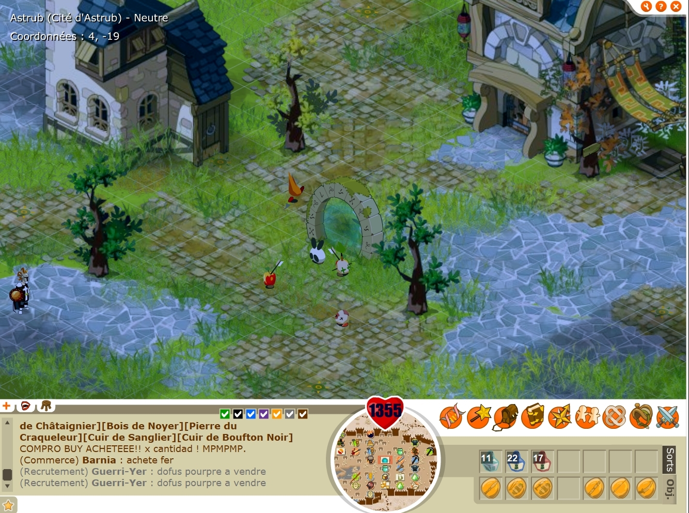

All the servers were migrated to that new version, well all of them except two servers. Since some users in Latin America had poor PC performances back in 2009, Ankama Games decided to keep two active servers for that community. And guess what, the servers are still accessible in 2020! This version can be enjoyable both for young and elderly. This tutorial will provide a full guide on how to start the game Dofus. This whole tutorial will assume the user to have a subbed account (which can easily be done in the Dofus website)